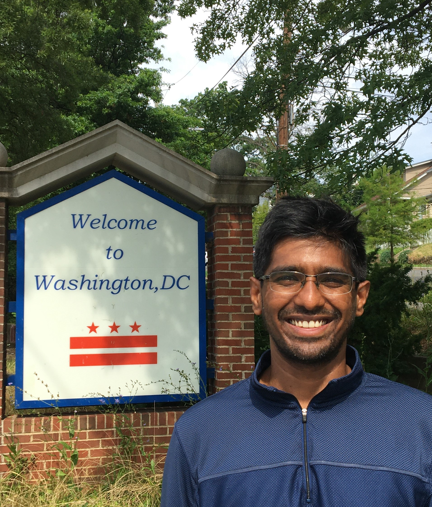

|
I am a Ph.D. student in the Neuroscience and Cognitive Science (NACS) program at the University of Maryland, College Park (UMD) , working with my advisors Prof. Yiannis Aloimonos and Dr. Cornelia Fermüller in Perception & Robotics Group Prior to joining the Ph.D. program, I received a Master's degree in Robotics Engineering from A. James Clark School of Engineering at UMD and Bachelor's degree in Electronics and Communication Engineering from Visvesvaraya Technological University, India. Since then I've had the pleasure to work at:
CV / Email / GitHub / Google Scholar / LinkedIn |
 |
|
|
I am interested in computer vision, machine learning, and robotics. My current focus is to develop novel algorithms for solving visual navigation problems such as Motion Segmentation and Tracking, Simultaneous localization and mapping (SLAM) and Visual odometry in dynamic scenes using Neuromorphic Event-based cameras. |